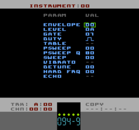

Instrument Editor Page
Tracks A, B, C and D use "Instruments" as the basis for their sound generation. The parameters are reasonably self-explanatory.
|
specifies the ADSR Envelope number for the Instrument. Envelopes are defined and edited in the Envelope List page. Used on Tracks A, B & D only |
|
scales the output of the ADSR Envelope. 00 is silent, 0F is maximum volume. Affects Tracks A, B & D only |
|
sets the length of time in ticks/frames that notes are held for before triggering the Release phase of the ADSR. A value of 00 means the note will be infinite (until a new note or a Kill command) |
|
sets either one of four pulse waveforms or the Duty Table number to use for this Instrument. Effects Tracks A & B only |
|
selects a Pitch/Command table for the Instrument. '--' means that a Table is not used for this Instrument. Valid for Tracks A, B, C & D. |
|
sets a Pitch Sweep amount for the Instrument. 00 to 7F is up, FF to 80 is down. See below for explanation of the differences between this and SWEEP. Valid for Tracks A, B and C. |
|
sets the resolution of the PSWEEP effect. This setting also affects the resolution of VIBRATO and the speed of the Chord (Cxx) Command. Valid for Tracks A, B and C |
|
sets SWEEP value for the Instrument. 00 to 7F is up, FF to 80 is down. Valid for Tracks A, B and C. |
|
selects the Vibrato program for the Instrument. Vibrato settings are edited and defined in the Vibrato List. A value of '--' means no Vibrato. Valid for Tracks A, B and C. |
|
sets fine tuning for the Instrument. Values can be positive or negative (2's complement, of course). Valid for Tracks A, B and C. |
|
sets the Hard Frequency intensity for Tracks A and B. See below for explanation. Valid for Tracks A and B. |
|
select the Echo program for the Instrument. A value of '--' means no Echo is selected. Valid for Tracks A, B and D. |
PSWEEP and SWEEP
The difference between PSWEEP and SWEEP is that PSWEEP attempts to provide a
linear sweeping so that the perceived pitch change is even throughout all octaves. SWEEP is
the more traditional way of adding a constant to the output frequency which
, because the NES has non-linear pitch, means that the higher the pitch,
the faster the sweep (and vice versa). The other quite clever thing about
PSWEEP is that it works better in conjunction with other pitch modulation
such as arpeggio etc. to give a more musical result. SWEEP is not affected by
PSWEEP-Q.
HARD FREQUENCY
Hard Frequency is an odd effect. There's a 'quirk' with the two square channels on the NES whereby an audible click/pop can be heard when the upper register of the voice's frequency (or 'period') is written to by the audio engine. Normally it's an undesirable effect but because Pulsar is refreshed 3 times per frame, constantly writing to these registers produces some interesting noises. The HARD FRQ setting has a range of 00 to 07 which tells Pulsar on which refresh pass to write the upper frequency registers, 00 being never and 07 being always.